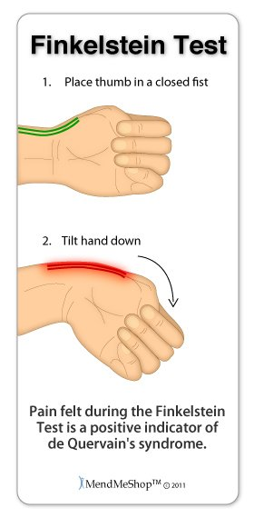
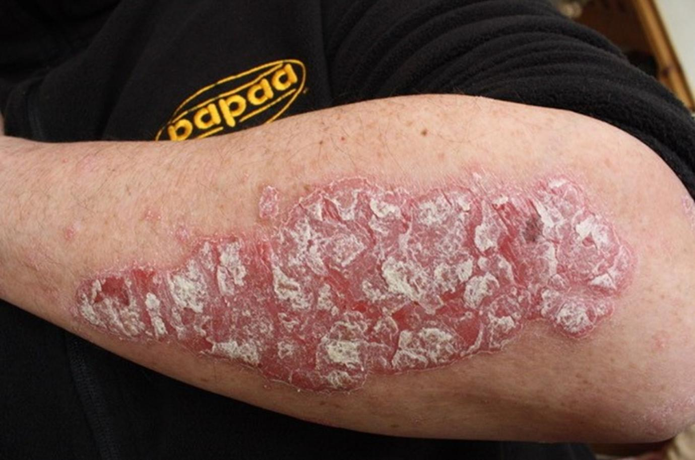
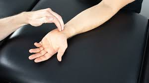
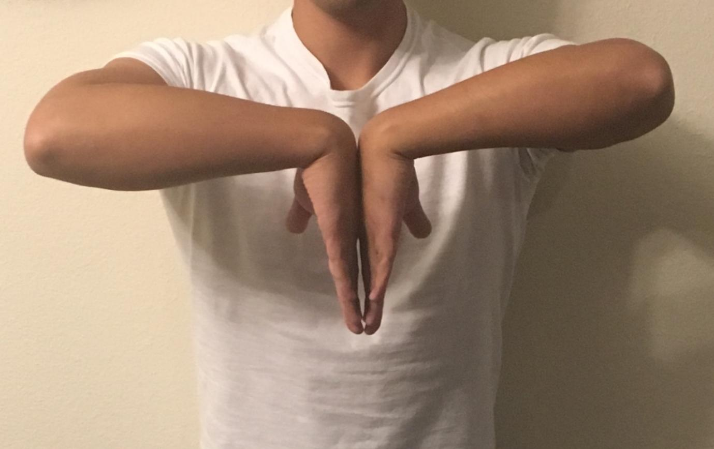

HAND PAIN
CASE NUMBER ONE – STEM
Your next patient is a 40 year old lady who presents to your general practice complaining of pain on both of her hands.
Task:
- Take history from patient - you will have a prompt time at 6 minutes
- Physical examination will appear on the screen at 6 minutes
- Explain diagnosis and differentials
DIFFERENTIAL GROUPING FRAMEWORK
We divide hand pain into four groups
Joint / Arthritis Group
Because bilateral hand pain = polyarthritis
Includes:
- Rheumatoid arthritis
- Psoriatic arthritis
- Gout
- Reactive arthritis
Red Flags
Even if bilateral:
- Malignancy
- Infection
Neurological Causes
Two main mechanisms:
- Nerve root compression
- Cervical radiculopathy
- Cervical radiculopathy
- Peripheral nerve compression
- Carpal tunnel syndrome
- Cubital tunnel syndrome
- Carpal tunnel syndrome
Other Differentials
- De Quervain’s tenosynovitis
- Hemochromatosis
- IBD-related arthritis / autoimmune
REVIEW OF IMPORTANT CONDITIONS
RHEUMATOID ARTHRITIS
Key Features
- Symmetrical involvement of PIP
- Significant morning stiffness
- Pain worse on waking
- Other features: Tiredness, weight loss
Investigations
- Rheumatoid factor – screening
- Anti-CCP – confirms RA
- ESR / CRP
- X-rays – pattern of bone involvement
REACTIVE ARTHRITIS
- Triggered by:
- Gastroenteritis
- Urogenital infection (e.g. chlamydia)
- Gastroenteritis
- Timeframe:
- 1–3 weeks after infection
- 1–3 weeks after infection
- Affects:
- Mainly large joints
- But also fingers and toes
- Mainly large joints
CARPAL TUNNEL SYNDROME
- Median nerve entrapment at wrist
- Often occupational:
- Repetitive wrist movement
- Repetitive wrist movement
- Symptoms:
- Numbness
- Pins and needles
- Pain in chronic cases
- Distribution: first 3½ fingers
- Numbness
Associations
- Pregnancy
- Hypothyroidism
- Rheumatoid arthritis
- Gout
- Diabetes
Classic Feature
“Do you wake up at night with pins and needles and have to shake your hands until it gets better to go back to sleep?”
Always a yes
DE QUERVAIN’S TENOSYNOVITIS
- Usually in patients with rapid repetitious movements of the thumb and wrist: Staple gun operators, assembly line workers
- Pain at wrist and proximal to wrist on radial border
- Pain worse on grasping
- Pain on thumb and wrist movements
- Diagnostic Triad: Tenderness with possible crepts over radial styloid
- Firm tender localized swelling in area of radial styloid
- Positive finklestein test
- Thumb in palm → fist → passive ulnar deviation → pain

HEMOCHROMATOSIS
- Iron overload
- Affects:
- Liver → cirrhosis
- Bronze diabetes
- Heart → restrictive cardiomyopathy
- Hands → arthralgia
- Liver → cirrhosis
HISTORY-TAKING FRAMEWORK
STEP 1 – OPENING
Doctor:
“How can I help you today?”
Patient:
“I have pain in both of my hands.”
STEP 2 – PAIN ANALYSIS
Ask: SIQORAA
- Site
- Intensity (1–10)
- Quality
- Onset
Constant or intermittent - Radiation
- Alleviating and aggravating (Better or worse)
- affecting life
Key pattern questions:
- Night pain?
- Worse in morning or end of day?
- Worse with rest or activity?
Patient:
“It is worse in the morning and better when I move.”
→ Inflammatory arthritis
STEP 3 – DIFFERENTIAL GROUP QUESTIONS
GENERAL MSK QUESTIONS
- Swelling
- Any redness or rash
- Do you have any stiffness? - yes.
- If yes - is the stiffness worse in the morning or at the end of the day?
- Have you had any trauma or injuries in your hands?
RED FLAGS
- Weight loss
- Appetite
- Lumps & bumps
- Fever / chills
JOINT / ARTHRITIS
Osteoarthritis
- Occupation
- Repetitive movement
- Excessive exercise, lifting heavy weights
Rheumatoid arthritis
- Other joints?
- Family history?
Psoriatic arthritis
- Rashes on elbows or knees?
Gout
- Have you noticed any relationship between pain and eating Red meat and drinking Alcohol?
- Did you notice any deformity in your hand? (Can also be asked as a part of general questions.)
Reactive arthritis / IBD
- Diarrhea?
- Blood in stool?
- Vaginal or penile discharge?
- STI?
NEUROLOGICAL
- Neck pain?
- Shoulder or elbow pain?
- Numbness?
- Pins and needles?
- Weakness?
OTHER
Hemochromatosis
- Tanning of skin?
- Tiredness?
- Family history?
STEP 4 – CLOSURE
- Smoking
- Alcohol
- Drugs
- Medications
- Allergies
- Past medical history
- Family history of joint disease
CASE 1 DIAGNOSIS – RHEUMATOID ARTHRITIS
History Findings
- Pain on both hands
- Getting worse
- Has swelling on her knuckles
- Affecting her job
- ?Stiffness
- Swelling
Physical examination Findings
- Swelling and tenderness on multiple joints of the fingers
- + RF
- + Anti CCP
- + ANA?
- Uric acid slightly elevated?
- Hb low: normal MCV and MCH (anaemia is a feature of rheumatoid arthritis - anaemia of chronic disease)
ANA and uric acid may be abnormal → distractors
EXPLANATION TO PATIENT
“You most likely have a condition called rheumatoid arthritis.
This is an autoimmune condition where your immune system attacks the joints and causes inflammation.
You have multiple joints involved, it is on both sides, you have morning stiffness, and your blood tests – especially anti-CCP – confirm it.”
CASE VERSION TWO – PSORIATIC ARTHRITIS
Your next patient has presented to your General Practice complaining of pain in his 2nd and 3rd finger.
Task:
- Take history for 6 minutes
- Physical examination will appear on the screen
- Explain diagnosis and differentials to the patient
History findings
- Pain and swelling in his fingers
- Mainly the 2nd and 3rd fingers
- + Rash on his elbows

Diagnosis
Psoriatic arthritis
Explanation
“This is an autoimmune condition that affects both the joints and the skin.
You have joint pain and a psoriasis-type rash, which is why this is psoriatic arthritis.”
PSORIASIS RASH DESCRIPTION
- Raised
- Clear margins
- Silvery scales
- Symmetrical
- Extensor surfaces
OTHER NON-RECALL CASES
DE QUERVAIN’S
- Pain at wrist towards the thumb
- Worse when lifting something
- Works in a factory.
- On PE:
- Tenderness on radius styloid process
- + Finklestein test
“Inflammation of tendon connecting muscle to bone.”
CARPAL TUNNEL
- Pain at night
- Pins and needles in his hand
- Wakes up and needs to shake his hands
- PE:
- + Tinel and Phalen test

